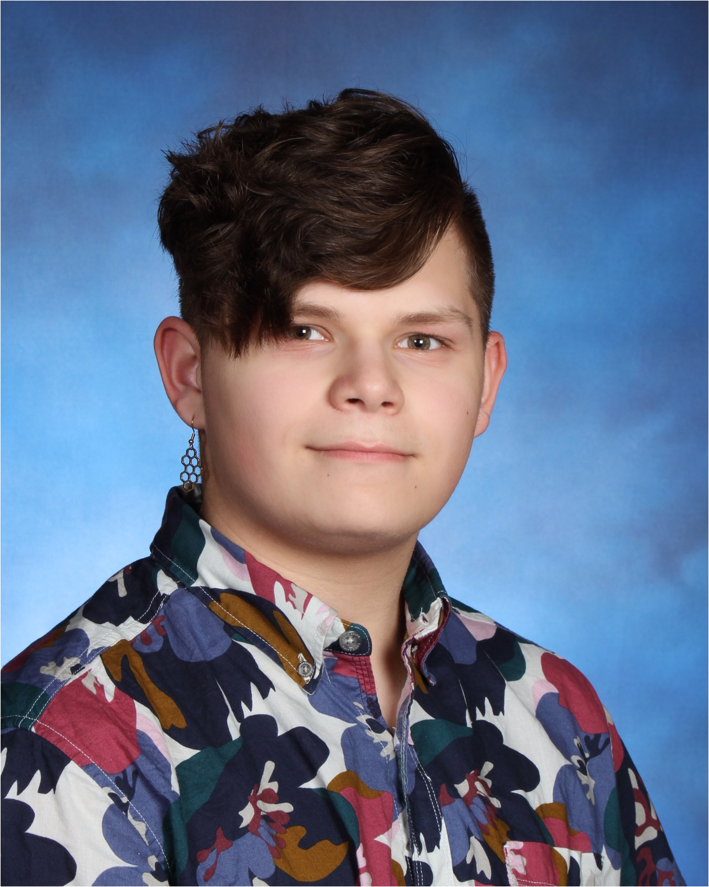

Welcome!
This site is a resume/portfolio for both my coding skills and Job applicable skills, please feel free to take a look at the internal code!
Who am I?
I'm Currently a Freshman at Morristown High. In middle school I either achieved honors or high honors for all 4 years. My current GPA is a 4.0. I can code in several different languages, i.e HTML, CSS, JavaScript, and Pyhton. I'm willing and able to work on a contract basis for website work either whole, page, update. If you are inrested in working with me please check out my resume page.
Why Me?
I'm Currently the Vice-President of Morristown Highschool's
G.W.C.
branch. G.W.C. is a club meant to create an inclusive enviornment to learn how to code in several
languages mainly web development languages like: React - HTML - CSS - JavaScript but also development
languages
like Java - Python.
I'm also taking and planning on taking several different Computer Science courses
Provided. I've currently completed Computer Science Essentials and have been recomended for AP Computer
Science
Principles. I'm also taking algebra 2 Honors in my freshman year and will be completeing a summer
Precalculus class
in preperation for AP Calculus B.C. my sophmore year.